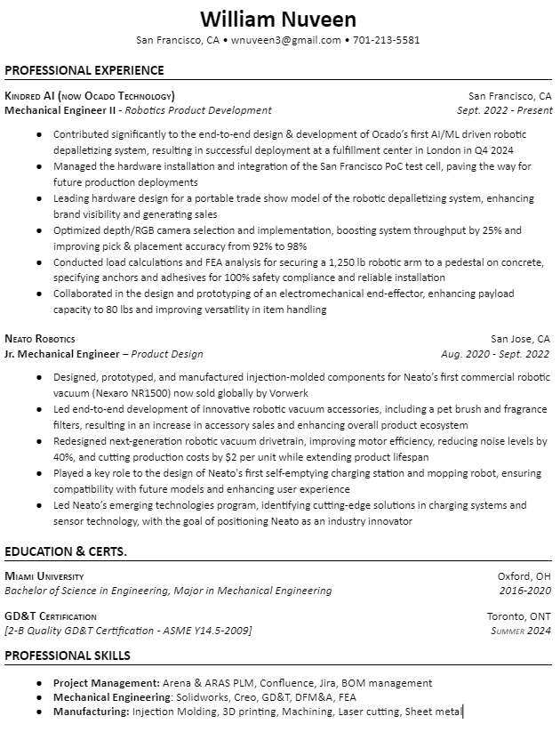
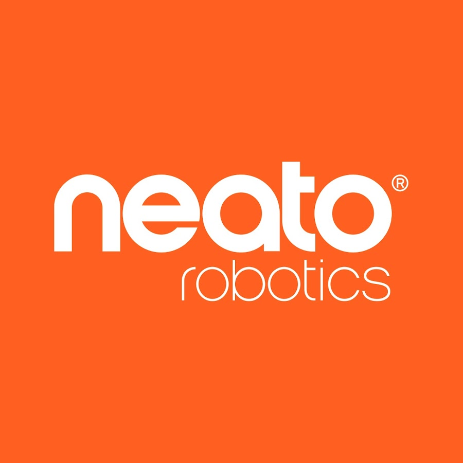
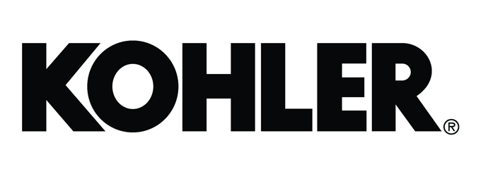

<!DOCTYPE html>
<html lang="en">
<head>
    <meta charset="UTF-8">
    <meta name="viewport" content="width=device-width, initial-scale=1.0">
    <title>William Nuveen - Portfolio</title>
    <script src="https://unpkg.com/react@17/umd/react.production.min.js"></script>
    <script src="https://unpkg.com/react-dom@17/umd/react-dom.production.min.js"></script>
    <script src="https://unpkg.com/@babel/standalone/babel.min.js"></script>
    <script src="https://cdn.tailwindcss.com"></script>
    <style>
        html {
            scroll-behavior: smooth;
        }
        .group:hover .group-hover\:opacity-100 {
            opacity: 1;
        }
        .some-class {
            max-height: 90vh;
        }
    </style>
</head>
<body>
    <div id="root"></div>

    <script type="text/babel">
        const { useState } = React;
    
        const portfolioItems = [
            { 
                image: 'depal.jpg', 
                title: 'Depalletizing Robot',
                images: ['depal.jpg', 'depal_2.jpg', 'depal_3.jpg'],
                shortDescription: 'Automated depalletizing robotic system for e-commerce fulfillment @ Ocado Technology',
                longDescription: 'At Ocado Technology, I played a key role in developing Ocados first AI-driven case-handling robotics system. I led the design and implementation of camera hardware, managed the hardware build at our SF lab, and contributed to designing critical components like the robotic end-effector and arm pedestal. My role involves close collaboration with software, QA, and mechatronics teams, providing a complete understanding of the full product development cycle. Our first deployment is in London in Q4. Now, I am leading the hardware design of our depalletizing robotic system for a traveling tradeshow.'
            },
            { 
                image: 'Camera_PC.png', 
                title: 'High-Resolution Camera System',
                images: ['Camera_PC.png', 'Camera_PC_2.jpg', 'Camera_PC_3.jpg', 'Camera_PC_4.png'],
                shortDescription: 'Depth/RGB camera testing project for robotic computer vision applications @ Ocado Technology',
                longDescription: 'RGB/Depth cameras are crucial for enabling ML models to segment and measure depth of items. I developed a KPI testing process to evaluate and integrate the best depth/RGB camera available to consumers. After testing and integrating said camera, the improved depth accuracy boosted grasping and pick speed, reaching over 300 UPH for bulky items. This success led to my role as a camera technology consultant for several teams, including Ocados on-grid robotic pick and emerging technology teams. I have also been the lead on everything cameras for our new depalletizing product.'
            },
            {
                image: 'Kindred_Sort_Camera.jpg',
                title: 'Sort Camera Mount for Kindred AI',
                images: ['Kindred_Sort_Camera.jpg', 'Kindred_Sort_Camera_2.jpg', 'Kindred_Sort_Camera_3.jpg', 'Kindred_Sort_Camera_4.jpg'],
                shortDescription: 'Sheet Metal Camera Mount for Sort robots @ Kindred AI - sustaining engineering',
                longDescription: 'I designed a robust camera mount for Kindred AIs (now Ocado Technology) Sort robot, engineered to withstand the forces exerted by a robotic arm without compromising the underneath depth camera. Fabricated from durable sheet metal, the mount is securely bolted to the robots housing, ensuring stability during operation. This camera mount is now integral to the Sort system, which has successfully sorted over 750 million items in active use across retail warehouses.'
            },
            { 
                image: 'Nexaro_NR1500.jpg', 
                title: 'Nexaro NR1500 Cleaning Robot',
                images: ['Nexaro_NR1500.jpg', 'Nexaro_2.jpg', 'Nexaro_3.jpg', 'Nexaro_4.jpg', 'Nexaro_7.jpg'],
                shortDescription: 'Neatos first autonomous commercial cleaning robot',
                longDescription: 'At Neato, I was a key mechanical design engineer for the design of Neato Robotics industrial robotic vacuum from concept through the first EVT phase. I designed, prototyped, and tested 3D printed parts for components the robots dustbin, filter, drivetrains, motors, wire layouts, and LiDAR covers (in red). After Neato dissolved, the project was transferred to Vorwerk and now operates as "Nexaro". This was Neatos first commercial robotics project. I leared all about product design, prototyping and testing. '
            },
            { 
                image: 'Mopping_Robot.jpg', 
                title: 'Advanced Mopping Robot',
                images: ['Mopping_Robot.jpg', 'Mopping_Robot_3.heic', 'Mopping_Robot_4.jpg', 'Mopping_Robot_2.jpg'],
                shortDescription: 'Neatos first autonomous mopping robot',
                longDescription: 'At Neato, I redesigned a self-extraction cleaning center to create a more intuitive, accessible system. The original design required manual handling, so my solution introduced a pivoting cover for hands-free filter bag access. This feature, along with a spring-damped mechanism and leak-proof seal, ensured optimal vacuum performance while maintaining robot mapping accuracy. I also integrated a touchscreen interface and accessory storage to boost customer satisfaction.'
            },
            { 
                image: 'Neato_Parts.jpg', 
                title: 'Neato Robotics Custom Parts',
                images: ['Neato_Parts.jpg', 'Neato_Filter.jpg', 'Neato_Drivetrain.jpg'],
                shortDescription: 'Custom-designed injection molded parts for Neato robotic vacuums',
                longDescription: 'At Neato, I specialized in plastic part design, developing creative solutions to proven challenges. I used Creo software to design plastic prototypes, 3D printing to ensure proper functionality, and GD&T and Injection molding fundamentals to manufacture the prototype. I collaborated with our overseas manufacturing team to optimize injection molding tool designs, created GD&T drawings, conducted tolerance analyses, and ensured fast, efficient assembly for our robotic applications. As examples, I was the lead in designing Neatos next generation drive-trains and dustbins with filters. These products were sold worldwide before Neato dissolved.'
            },
            { 
                image: 'Apple_Design_Challenge.jpg', 
                title: 'Apple Design Challenge Project',
                images: ['Apple_Design_Challenge.jpg', 'Apple_Design_Challenge_2.jpg', 'Apple_Design_Challenge_3.jpg'],
                shortDescription: 'iPod battery release mechanism design for Apple PD design challenge',
                longDescription: 'During my interview with Apples iPhone Product Design Engineering team, I had the opportunity to showcase my creativity through a project focused on designing a battery release mechanism for the iPod. The challenge was to create a solution that was user-friendly, cost-effective to assemble, durable, safe, and visually appealing. Additionally, I was responsible for developing a Bill of Materials (BOM) and calculating the forces acting on the mechanism. This project allowed me to demonstrate my skills in product design, problem-solving, and engineering.'
            },
            { 
                image: 'Kohler_Bath_Spout.png', 
                title: 'Kohler Bathroom Fixtures',
                images: ['Kohler_Work.jpg', 'Kohler_Bath_Spout.png', 'Kohler_Bath_Spout_2.jpg', 'Kohler_Pres.jpg', 'Kohler_Pres_2.jpg'],
                shortDescription: 'Innovative bath spout technology designed for Kohler Co.',
                longDescription: 'As a product design engineering intern at Kohler Company, I designed the companys first back-of-the bath spout diverter technology. I benchmarked existing diverters to gather design ideas, created a 3D model using Solidworks, and iterated through prototypes using Kohlers 3D printing technologies (carbon). My final design improved the functionality of Kohlers bath spout products, marking my first significant contribution in a product design role. I increased the water flow aesthetics (laminar flow), decreased leakages by implementing a new o-ring design, and lowered part manufacturing costs.'
            },
        ];
    
        const PortfolioModal = ({ item, onClose }) => {
    const [expandedImage, setExpandedImage] = useState(null);

    const handleOutsideClick = (e) => {
        if (e.target === e.currentTarget) {
            onClose();
        }
    };

    const handleImageClick = (image) => {
        setExpandedImage(image);
    };

    const closeExpandedImage = (e) => {
       if (e.target === e.currentTarget || e.target.tagName === 'BUTTON') {
                setExpandedImage(null);
        }
    };

    return (
        <div 
            className="fixed inset-0 bg-black bg-opacity-50 flex justify-center items-center z-50 p-4"
            onClick={handleOutsideClick}
        >
            <div className="bg-white rounded-lg w-full max-w-6xl max-h-[90vh] overflow-y-auto">
                <div className="p-8">
                    <h3 className="text-3xl font-bold mb-4">{item.title}</h3>
                    <p className="text-gray-700 mb-6 text-lg">{item.longDescription}</p>

                    {/* Image grid */}
                    <div className="flex flex-wrap justify-center gap-6 mb-8 after:content-[''] after:flex-auto">
                        {item.images.map((image, index) => (
                            <div 
                                key={index} 
                                className="w-full sm:w-4/5 md:w-2/3 lg:w-[calc(50%-0.75rem)] xl:w-[calc(33.333%-1rem)] aspect-video overflow-hidden rounded-lg shadow-lg cursor-pointer"
                                onClick={() => handleImageClick(image)}
                            >
                                
                            </div>
                        ))}
                        {/* Add empty flex items to ensure centering */}
                        {[...Array(3 - (item.images.length % 3 || 3))].map((_, index) => (
                            <div key={`empty-${index}`} className="w-full sm:w-4/5 md:w-2/3 lg:w-[calc(50%-0.75rem)] xl:w-[calc(33.333%-1rem)]" />
                        ))}
                    </div>
                    <button 
                        onClick={onClose} 
                        className="bg-blue-500 text-white px-6 py-3 rounded-lg text-lg font-semibold hover:bg-blue-600 transition duration-300"
                    >
                        Close
                    </button>
                </div>
            </div>

            {/* Expanded Image Overlay */}
            {expandedImage && (
                <div 
                    className="fixed inset-0 bg-black bg-opacity-90 flex justify-center items-center z-60"
                    onClick={closeExpandedImage}
                >
                    <div className="relative w-[130%] h-[130%] max-w-3xl max-h-[80vh] flex justify-center items-center">
                        <div className="relative bg-white p-4 rounded-lg w-full h-full flex justify-center items-center">
                            
                            <button 
                                onClick={closeExpandedImage}
                                className="absolute top-2 right-2 text-black text-3xl bg-white rounded-full w-8 h-8 flex items-center justify-center"
                            >
                                &times;
                            </button>
                        </div>
                    </div>
                </div>
            )}
        </div>
    );
};

    
        const PortfolioWebsite = () => {
            const [selectedItem, setSelectedItem] = useState(null);
    
            return (
                <div className="font-sans">
                    {/* Header */}
                    <header className="bg-white shadow-sm fixed w-full z-50">
                        <nav className="container mx-auto px-20 py-3 flex justify-between items-center">
                            <div className="text-3xl font-bold text-blue-500">WN</div>
                            <div className="space-x-4">
                                <a href="#" className="text-xl text-gray-600 hover:text-gray-800">Home</a>
                                <a href="#Resume" className="text-xl text-gray-600 hover:text-gray-800">Resume</a>
                                <a href="#portfolio" className="text-xl text-gray-600 hover:text-gray-800">Portfolio</a>
                                <a href="#experience" className="text-xl text-gray-600 hover:text-gray-800">Experience</a>
                                <a href="#contact" className="text-xl text-gray-600 hover:text-gray-800">Contact</a>
                            </div>
                        </nav>
                    </header>
    
                    {/* Hero Section */}
                    <section className="pt-32 pb-20 px-40 bg-gray-100">
                        <div className="container mx-auto flex flex-col md:flex-row items-center">
                            <div className="md:w-1/2 mb-8 md:mb-0">
                                <div className="text-gray-500 mb-2 text-4xl">Hello,</div>
                                <h1 className="text-5xl font-bold text-gray-800 mb-4">I'm William Nuveen</h1>
                                <p className="text-3xl text-gray-600 mb-10"> Mechanical Engineer | Design Enthusiast</p>
                                <a href="#Resume" className="bg-blue-500 text-white text-xl px-6 py-2 rounded-full hover:bg-blue-600 transition duration-300 inline-block">About Me</a>
                            </div>
                            <div className="md:w-1/2">
                                
                                </div>
                        </div>
                    </section>


                    {/* Resume Section */}
                    <section id="Resume" className="py-20">
                        <div className="container mx-auto px-20 flex flex-col md:flex-row items-center">
                            <div className="md:w-1/3 mb-8 md:mb-0">
                                
                            </div>
                            <div className="md:w-2/3 md:pl-12">
                                <h2 className="text-3xl font-bold text-gray-800 mb-4">Achievements on paper</h2>
                                <p className="text-xl text-gray-600 mb-6">
                                    As a mechanical design engineer, I specialize in AI-driven robotics, electro-mechanical design, and cost-efficient manufacturing. With a passion for innovation, I create cutting-edge solutions that turn concepts into reality.
                                </p>
                                <a 
                                    href="William Nuveen's Resume (Oct. 24).pdf" 
                                    target="_blank"
                                    rel="noopener noreferrer"
                                    className="bg-blue-500 text-white text-xl px-6 py-2 rounded-full hover:bg-blue-600 transition duration-300 inline-block"
                                >
                                    View Resume
                                </a>
                            </div>
                        </div>
                    </section>
    
                    {/* Portfolio Section */}
                    <section id="portfolio" className="py-20 bg-gray-100">
                        <div className="container mx-auto px-4 sm:px-6 lg:px-8">
                            <h2 className="text-3xl font-bold text-gray-800 mb-12">Mechanical Design Portfolio:</h2>
                            <p className="text-center text-2xl text-gray-700 font-semibold mb-8 italic">*Click on the images to learn more*</p>
                            <div className="flex flex-wrap justify-center gap-8">
                                {portfolioItems.map((item, index) => (
                                    <div 
                                        key={index} 
                                        className="bg-gray-200 h-64 rounded-lg overflow-hidden relative group cursor-pointer"
                                        onClick={() => setSelectedItem(item)}
                                    >
                                        
                                        <div className="absolute inset-0 bg-black bg-opacity-75 flex items-center justify-center opacity-0 group-hover:opacity-100 transition-opacity duration-300">
                                            <p className="text-white text-center px-4">{item.shortDescription}</p>
                                        </div>
                                    </div>
                                ))}
                            </div>
                        </div>
                    </section>
    
                    {/* Job History */}
                    <section id="experience" className="py-20">
                        <div className="container mx-auto px-20">
                            <h2 className="text-3xl font-bold text-gray-800 mb-8">Experiences:</h2>
                            <div className="space-y-6">
                                {[
                                    {
                                        title: 'Mechanical Engineer II',
                                        company: 'Ocado Technology',
                                        Location: 'San Francisco, CA',
                                        dates: '2024 - Present',
                                        description: 'As a mechanical engineer at Ocado Technology, I play a key role in developing Ocados first AI-driven case-handling robotics system. I led the design and implementation of camera hardware, managed the hardware build at our San Francisco lab, and contributed to designing critical components such as the robotic end-effector and pedestal.'
                                    },
                                    {
                                        title: 'Jr. Mechanical Engineer',
                                        company: 'Neato Robotics',
                                        Location: 'San Jose, CA',
                                        dates: '2021 - 2024',
                                        description: 'As a mechanical engineer at Neato Robotics, I led the development of key components for robotic vacuums, including drivetrains and injection-molded parts. I was instrumental in designing and producing a vacuum/mop robot, a commercial vacuum robot, and robot accessories'
                                    },
                                    {
                                        title: 'Mechanical Engineering Intern',
                                        company: 'Kohler Company',
                                        Location: 'Kohler, WI',
                                        dates: 'Summer 2019',
                                        description: 'As a product design engineering intern, I designed Kohler’s first back-of-the-bath spout diverter. By reducing water leakage, improving laminar flow aesthetics, and lowering manufacturing costs, I contributed to Kohlers commitment to innovative and sustainable bathroom solutions.'
                                    }
                                ].map((job, index) => (
                                    <div key={index} className="bg-white p-6 rounded-lg shadow">
                                        <h3 className="text-xl font-semibold mb-2">{job.title}</h3>
                                        <p className="text-gray-600">{job.company} • {job.dates}</p>
                                        <p className="text-gray-600 mt-2">{job.description}</p>
                                    </div>
                                ))}
                            </div>
                        </div>
                    </section>

                    {/* Key Skills Section */}
                    <section className="relative py-32 overflow-hidden min-h-screen flex items-center">
                        {/* Video Background */}
                        <video 
                            autoPlay 
                            loop 
                            muted 
                            className="absolute top-0 left-0 w-full h-full object-cover z-0"
                        >
                            <source src="Ocado.mp4" type="video/mp4" />
                            Your browser does not support the video tag.
                        </video>

                        {/* Overlay to ensure text is readable */}
                        <div className="absolute top-0 left-0 w-full h-full bg-black opacity-50 z-10"></div>

                        {/* Content */}
                        <div className="container mx-auto px-4 sm:px-6 lg:px-8 max-w-7xl relative z-20">
                            <h2 className="text-5xl font-bold text-white mb-16 text-center">Key Skills</h2>
                            <div className="grid grid-cols-1 sm:grid-cols-2 lg:grid-cols-4 gap-12 text-center">
                                {['Product Design & Development', 'Manufacturing Methods', 'Automation & Robotics', 'Camera Technologies'].map((skill, index) => (
                                    <div key={index} className="bg-white bg-opacity-20 p-6 rounded-lg backdrop-filter backdrop-blur-lg flex items-center justify-center h-40">
                                        <h3 className="text-2xl font-semibold mb-4 text-white text-center">{skill}</h3>
                                    </div>
                                ))}
                            </div>
                        </div>
                    </section>   

                    {/* Summary Section */}
                    <section className="py-20 bg-gray-100">
                        <div className="container mx-auto px-20">
                            <h2 className="text-5xl font-bold text-gray-800 mb-6 text-center">Summary</h2>
                            <p className="text-xl text-gray-600 mb-10 text-center max-w-3xl mx-auto">
                                Thank you for taking the time to explore my portfolio. Whether you're a recruiter, fellow engineer, friend, or simply stumbled upon it by chance, I hope you find my work both interesting and enjoyable.
                            </p>
                            <div className="flex justify-center space-x-12 mb-10">
                                <a href="https://www.youtube.com/watch?v=ssZ_8cqfBlE" target="_blank" rel="noopener noreferrer" className="hover:opacity-80 transition-opacity">
                                    
                                </a>
                                <a href="https://www.youtube.com/watch?v=riMhfXZfiEU&t=1s" target="_blank" rel="noopener noreferrer" className="hover:opacity-80 transition-opacity">
                                    
                                </a>    
                                <a href="https://www.kohlercompany.com/our-brands/kitchen-bath/" target="_blank" rel="noopener noreferrer" className="hover:opacity-80 transition-opacity">
                                    
                                </a>
                            </div>
                            <p className="text-semibold text-gray-700 text-center mb-10">
                                Click to watch a video about our projects
                            </p>
                        </div>
                 </section>

                    {/* Contact Section */}
                    <section id="contact" className="py-20 bg-blue-600 text-white">
                        <div className="container mx-auto px-20 text-center">
                            <h2 className="text-4xl font-bold mb-4">Contact Me</h2>
                            <p className="text-2xl font-bold mb-8">Let's discuss how I can contribute to your engineering team.</p>
                            <div className="text-xl flex justify-center space-x-4">
                                <p>San Francisco, CA</p>
                                <p>|</p>    
                                <p>wnuveen3@gmail.com</p>
                            </div>
                            {/* Updated "Get In Touch" button */}
                            <a 
                                href="mailto:wnuveen3@gmail.com" 
                                className="mt-8 bg-white text-blue-800 px-6 py-2 rounded-full hover:bg-gray-100 transition duration-300 inline-block"
                            >
                                Get In Touch
                            </a>
                        </div>
                    </section>
    
                    {/* Footer */}
                    <footer className="bg-gray-800 text-white py-8">
                        <div className="container mx-auto px-20 flex flex-col items-center">
                            <p className="mb-4">&copy; 2024 William Nuveen. All Rights Reserved.</p>
                            <a href="https://www.linkedin.com/in/williamnuveen/" 
                                target="_blank" 
                                rel="noopener noreferrer" 
                                className="hover:text-blue-500 transition duration-300"
                                aria-label="LinkedIn">
                                    <svg className="w-6 h-6" fill="currentColor" viewBox="0 0 24 24" aria-hidden="true">
                                        <path d="M20.447 20.452h-3.554v-5.569c0-1.328-.027-3.037-1.852-3.037-1.853 0-2.136 1.445-2.136 2.939v5.667H9.351V9h3.414v1.561h.046c.477-.9 1.637-1.85 3.37-1.85 3.601 0 4.267 2.37 4.267 5.455v6.286zM5.337 7.433c-1.144 0-2.063-.926-2.063-2.065 0-1.138.92-2.063 2.063-2.063 1.14 0 2.064.925 2.064 2.063 0 1.139-.925 2.065-2.064 2.065zm1.782 13.019H3.555V9h3.564v11.452zM22.225 0H1.771C.792 0 0 .774 0 1.729v20.542C0 23.227.792 24 1.771 24h20.451C23.2 24 24 23.227 24 22.271V1.729C24 .774 23.2 0 22.222 0h.003z"/>
                                </svg>
                            </a>
                        </div>
                    </footer>
    
                    {/* Render modal if an item is selected */}
                    {selectedItem && (
                        <PortfolioModal item={selectedItem} onClose={() => setSelectedItem(null)} />
                    )}
                </div>
            );
        };
    
        ReactDOM.render(<PortfolioWebsite />, document.getElementById('root'));
    </script>
